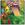

| B s . A A A | full 3/4 1/2 | E E | Light Dark |
|

WolverGrim
Author of 4 Stories |
Prologue
Ranma slumps dejectedly from the Tendou house, his backpack held close. He was tired of needless fighting, and explaining himself to his -fiance-. She never listened any way. This time he had to get away. If he didn't, there was a chance he could explode, and -that- even if he wanted to, was bad. The youth lets his feet lead him down the street, his eyes closed and head tilted back to let the slight breeze play with his bangs. It felt good. Much better than swimming around in the pond after Akane was done with him. He wished he could have been smart enough to walk away before. It would have saved him from much un-needed stress and repression. Something smelt good. Beef. Possibly vegitables too. All mixed with smoke. Ranma follows his nose and feels the ground change from concrete to loose gravel. There is a sudden shout and he opens his eyes. He was standing beside a fire with food over it, and Ryoga was sitting beside it, bug-eyed.
"R-Ranma!" The eternally lost boy gasps. "How did you get to China?"
The young martial artist shakes his head. "This is Nerima you dumb ass."
"Oh." Ryoga looks around the lot, then back to his nemesis. "Do we fight now?"
"No!" Ranma hurridly sits down opposite of him and points at the food. "Dinner?"
"Yeah. Are you hungry? Normally you've eaten by now."
"Well, I decided I'd skip so I didn't have to fight with Akane."
Ryoga's eyes narrow. "What did you do to her?"
"Lets see...I tried to compliment her being able to boil water, and got booted into the pond. After bathing, I tried to appologize and got booted into the pond. That time I just went back to her and tried to ask -why- she was such a bitch, and got booted into the pond. Then I took another bath and left."
"Here." Surprisingly, the mostly violent Ryoga was quite suttle tonight, and decided to just serve his friend a bowl of steaming beef and vegitable soup.
"Thanks." It was a warm night, but as the boy recieves his food, he gets a chill down his back. Why was his friend being so nice? Didn't they normally duke it out? What was different about this night? He takes a tentative spoon of soup and forces a smile. "Tastes good. You could make a great chef."
"Glad you like it."
They eat in silence, the only sound the scraping of wooden spoons against the bowls, and the crackling of the fire.
Somehow the heat was reaching Ranma. He was very upset about the night's events, and wouldn't let anything comfort him. Not when Akane was upset. "Why should I care about her?" He glares at the spoon, ignoring the startled jump of his friend across the flames. "She never cares about me. She never listens, and always gets upset at me for things that are out of my control. Heck, I shouldn't even go back! You can have her for all I care!"
"Ranma..." Ryoga's voice is soft and strained. "Don't say that."
"Well its true! -Every- time I try and say something nice, she gets mad at me. Every time I try to appologize, she gets mad at me. Its a no win situation. One I'm just too tired of dealing with."
"What would you do if you left? Go to one of your other fiancees?"
"No. I don't care about them like I do Akane. I think I'll just go off alone...and never be found."
Ryoga was very frightened. He had never heard such vendiction in the martial artist's voice before. He sounded like he would actually go and walk off a bridge! It was obvious Akane was the main problem, but Ryoga had the feeling that it was also the boy's curse, and constant bad luck. Although on a normal day the bandit weilding youth would gladly spar with him, he never hated him. He was his best friend! And god be damned if he let the teen kill himself over any of it.
"Well," Ranma sighs, trying his best to smile. "Thanks for the food. I think I'll go back now.." "No." If he did that, he would either blow up on someone there (probably Akane) or on himself. He needed to stay away for the night. 'Hurry, think of something!' "Wanna talk?"
"Not particularly." But as he says it, Ranma scoots over to his friend's side. For some reason he was picking up major ki waves from him and liked it. It was warm and comforting. He was never attracted to someone's ki. But he liked it a -lot-.
Ryoga stiffles a chuckle. "Well, just vent and you'll feel better."
"Okay, I've been listening to all this great hard rock american music, and its really relaxing for me. I relate to the translated lyrics, but Akane says she's tired of me listening to it cuz its loud and I hate her for that."
"Did you tell her?"
"I can't." Ranma sighs. "I've been trying to keep my mind from her, because I only get mad at her for all the times she's slammed me over the head or thrown me in the pond. But then it only gets worse because she gets made at me for ignoring her. There's no way around it."
'It's strange.' The eternally lost boy muses. 'She's never that way with anyone else. Not even me. She's only hard headed and bitchy with -him- .'
"I am just so tired. I can stand up to numerous challenges in my life, and get them all beat. But then when it comes to her, I can't. I think she's better off marrying someone who makes her happy." He gives his friend a significant look. "Like you."
Ryoga is taken aback by the acknowladgement, and his face goes beat red. "W-what?" "Well, you always get compliments from her. She never hits you. Heck, she doesn't even think violent thoughts about you. She's always like, 'Why can't you be more like Ryoga'. So, obviously you'd be a great choice."
Well, the bandana weilding boy had always wanted to hear that, but despite the kind words, he wasn't comfortable. Now that he knew his rival thought he had a great chance, he didn't want it. He was afraid for one, and didn't think he could ever take it if it meant his friend's depression. "Why don't you stay the night here?"
Ranma raises an eyebrow. "Here?"
"Yeah. It'll give you time to cool off. I really don't want to see you upset."
"Wow. You kinda sound like Kasumi. But, do you have enough room in the tent?"
"Sure!"
They spend another few hours sitting side by side, looking at the fire. Occationally remenising old times, before the curse, and all the crazy things since. When the weather starts to get cooler, they move into the tent. Obviously Ryoga had to lie to get the boy to stay, because there was -just- enough room for them to lay down on their backs.
Ranma snickers, pulling his shirt off over his head. Leave it to Ryoga. 'But, you would have stayed, right? If he had said it wasn't.' He blushes in the dark. Why was he having these strange thoughts? Was it because of his curse? He could blame it on it. He glances over to his friend who has just pulled his own top off. 'But his ki is just so...so..' It was powerful. Not in a dangerous way, but in a comforting, spiritual sense. It was frightening almost, but despite it, Ranma couldn't bring himself to move away. They were mere inches from touching arms, and he didn't mind. He never felt this way with Akane. 'But she never listens to you. She just plays base ball with your head and her mallot.' His stomach twists. 'You let her use you!'
"Hey, are you okay?" Ryoga turns to look at his friend, only making out the sillouhet. He can see his friend clutching his stomach with one hand, and throw another over his eyes. "Was it that bad?"
Despite his inner struggle, Ranma feels himself chuckle. "N-no. It wasn't the food. I just realized how much I hate myself. I've been letting everyone use me!"
"What do you mean?" The eternally lost boy props himself up on an elbo. "Ranma?"
"I can't stand it! Shampoo! Ukyou! Cologne! Happosai! Akane! Kunou! Kodachi! They all use me! And I let them! I have to make it stop, now!" He goes to get up but is pulled back down by his tent-mate. "Let go! I have to tell each of them what I think of them!"
"Calm down! You're bein irrational!" Ryoga growls, his one fang showing.
"What do you know?" Ranma hisses, feeling a tear fall down his cheek unchecked. Thank god for the dark. "I hate this! Who decides how crapped up someone's life is? Its like I got -everything-! And if its not enough, others blame me for -their- proble-Mmph!"
Ryoga closes the small distance between them and plants a kiss directly on the boys lips. That would shut him up. Even if it was for girl- guy relationships, he found it quite successful. Hell, the other youth seemed to like it just as much as him!
Ranma closes his eyes, knowing he shouldn't let the kiss go on, but wishing that it would. He was tired of keeping his emotions bottled up, and his best friend just offered a way to release them! He deepens the kiss, unsure of how long it might last. He feels Ryoga's strong arms snake around his shoulders, and pull him closer.
The tall martial artist drops him gently on his back and while fighting tongues, tugs the boy's pants down past his knees. 'Don't listen to reason!' He yells at himself silently. 'Just take him. You know you want to! You know he needs it!' Nothing like a helping -hand-.
Ranma arches his back, pressing himself into the boy on top of him. Tears run freely down his pale cheeks, and he wraps his arms around his friend's waist. Akane would never give him this. She would yell pervert and throw him into the pond. She would be that bitch that she was and tell him how stupid he was and then throw him in the pond. 'But, what would she say to this...?' He takes mental pleasure in the fact that for once, he didn't care. 'Ryoga is here for you.'
Several people passing the lot, hurry along at the sounds of grunting and groaning. Nerima was a strange district, and when that tent went up, it was one of those 'On-days'. They had nothing to worry about, but the sounds just turned them in their paths. What was that fanged-boy doing so late at night that required so many swear words anyway?

|
Review this Chapter |